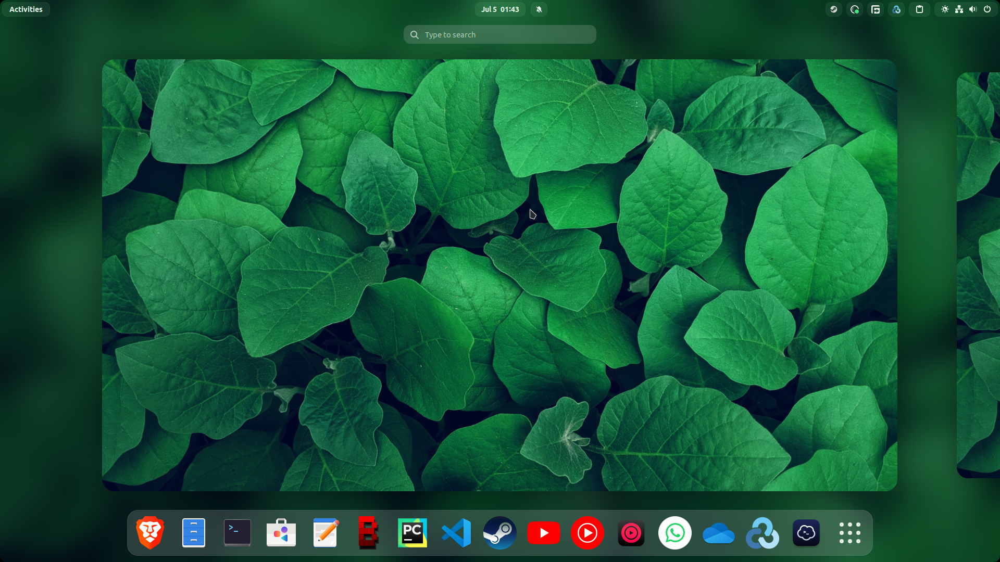

Setting up EndeavourOS Gnome desktop environment fresh install

If installing EndeavourOS skip the installation of ufw firewall or if it has been installed then
uninstall ufw if you will be using Portmaster, the command is pacman -Rs ufw. After
going through the welcome prompt go to the flathub website and
install flatpak for EndeavourOS, install
font downloader. While it is downloading open the terminal
and search for 'yay -S gnome-software' and also install 'yay -S gnome-tweaks'. When font downloader
has
completed its installation process install the ubuntu font and apply it with gnome tweaks and make
sure to set anti aliasing.
- Clocks
- Droid Cam
- Extension Manager
- Free Download Manager
- Sound Recorder
- Fragments
- Obs Studio Bin
- Btop++
- nvtop
- Port Master
- Calendar
- Collision
- Curtail
- Drawing
- Eye Dropper
- Mousai
- Console
- G4 Music
- AdwSteamGTK
- Flatseal
- Brave-bin
- MS Edge-bin
- Cider
- Stacer
- Clapper (only for wayland session, crashes on x11)
- Celluloid (for x11 session)
- Mambaforge -Github
- Only Office
- Weather
- ProtonUp-QT
- Font Manager
- Smile
- Zoom
- Easy Effects
- Rclone & Rclone browser
- Login Manager
- Font Manager
List of Apps to install
- Appindicator & KStatus
- Blur My Shell
- Clipboard Indicator
- GSConnect
- Just Perfection
- Night Theme Switcher
- Panel Corner
- Quick Settings Audio devices hider
- Removable drive menu
- User Themes
- Alt+Tab Scroll Workaround (if using x11)
Extensions to install
Setting up Jupyter Notebook and Jupyter Lab
Fire up the terminal and type
nano ~/. bashrcThen set the alias
jn='conda activate && jupyter notebook'
jl='conda activate && jupyter lab'
ca='conda activate'
Now for setting the default browser for jupyter notebook and jupyter lab:
1. Create a Jupyter Notebook Config file
jupyter notebook --generate-configThen open the config file. If you used the default location for the file it would be in:
./jupyter/jupyter_notebook_config.pySearch for following word to change your Juypter Notebook launch browser.
c.NotebookApp.browser3. Find your browser path For this example I will be using microsoft edge
which microsoft-edgeThe output will be:
/usr/bin/microsoft-edge4. Set the launch browser in Jupyter Notebook
Paste the path from above and add %s in the end and remove #(uncomment) the line and save it.
c.NotebookApp.browser = '/usr/bin/microsoft-edge %s'Microsoft Windows Fonts
Copy the Windows Fonts to /usr/local/share/fonts/:
sudo mkdir /usr/local/share/fonts
sudo mkdir /usr/local/share/fonts/WindowsFonts
sudo cp /windows/Windows/Fonts/* /usr/local/share/fonts/WindowsFonts/
fc-cache --force
fc-cache-32 --force
Rule mapping for similar fonts
Often websites specify the fonts using generic names (helvetica, courier, times or times new roman)
and a rule in
fontconfig maps these names to free fonts (Liberation, Google CrOS, GUST TeX Gyre...). The
substitutions are defined in
/etc/fonts/conf.d/30-metric-aliases.conf.
To make full use of the Ms Windows fonts it is necessary to create a rule mapping those generic names to the Ms Windows specific fonts contained in the various packages above:
Copy the contents or replace from this file and paste it in the above mentioned configuration file. Sudo access will be needed so, it must be done through terminal. More information about this can be found here.